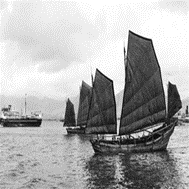

Демонстрационные примеры
Пример использования аугментации изображений
Модуль включает три основных этапа обработки данных: загрузку изображений, указание методов аугментации, сохранение результатов преобразования.
На первом этапе осуществляется загрузка входных изображений в вектор с использованием функции cv::imread.
std::vector<cv::Mat> inputImagesAugmetation(10);
inputImagesAugmetation[0] = cv::imread("files\\img0.jpg", cv::IMREAD_COLOR);
inputImagesAugmetation[1] = cv::imread("files\\img1.jpg", cv::IMREAD_COLOR);
...
inputImagesAugmetation[9] = cv::imread("files\\img9.jpg", cv::IMREAD_COLOR);
На этапе задания методов аугментации задаются названия методов, которые будут применяться к входным изображениям. В качестве методов преобразования могут выступать: поворот изображения на 45, 90, 270 или 315 градусов; зеркальное отображение по горизонтали, вертикали или по обоим направлениям. Ниже приведены методы аугментации изображений:
std::vector<mrcv::AUGMENTATION_METHOD> augmetationMethod = {
mrcv::AUGMENTATION_METHOD::ROTATE_IMAGE_90,
mrcv::AUGMENTATION_METHOD::FLIP_HORIZONTAL,
mrcv::AUGMENTATION_METHOD::FLIP_VERTICAL,
mrcv::AUGMENTATION_METHOD::ROTATE_IMAGE_45,
mrcv::AUGMENTATION_METHOD::ROTATE_IMAGE_315,
mrcv::AUGMENTATION_METHOD::ROTATE_IMAGE_270,
mrcv::AUGMENTATION_METHOD::FLIP_HORIZONTAL_AND_VERTICAL};
Далее осуществляется вызов функции аугментации в формате
int state = mrcv::augmetation(inputImagesAugmetation, outputImagesAugmetation, augmetationMethod);
После выполнения всех операций, модифицированные изображения сохраняются на диск с использованием функции cv::imwrite(ss.str(), resultImage)
Результат работы функции аугментации :
{kind=link}


Пример использования кластеризации
Реализует алгоритмы кластеризации 3D-точек на основе данных стереокамер.
Загрузка данных
Загружает данные для кластеризации из файла.
void mrcv::DenseStereo::loadDataFromFile(const std::string& filename)
Выполнение кластеризации
Выполняет кластеризацию загруженных данных.
void mrcv::DenseStereo::makeClustering()
Пример использования сравнения изображений
Предоставляет функцию для сравнения двух изображений и вычисления их схожести.
Сравнение изображений
Вычисляет меру схожести между двумя изображениями.
double mrcv::compareImages(
const cv::Mat& img1,
const cv::Mat& img2,
int method
)
Пример использования детектирования объектов
Реализует функционал для автоматического обучения детектора объектов.
Инициализация детектора
Инициализирует детектор с заданными параметрами.
void mrcv::Detector::Initialize(
int device,
int width,
int height,
const std::string& classesFile
)
Автоматическое обучение
Выполняет автоматическое обучение модели детектора.
void mrcv::Detector::AutoTrain(
const std::string& datasetPath,
const std::string& imageExtension,
const std::vector<int>& epochs,
const std::vector<int>& batchSizes,
const std::vector<float>& learningRates,
const std::string& pretrainedModel,
const std::string& outputModel
)
Пример использования морфологических операций
Реализует основные морфологические операции над изображениями.
Применение морфологической операции
Выполняет заданную морфологическую операцию над изображением.
int mrcv::morphologyImage(
cv::Mat& image,
const std::string& outputPath,
mrcv::METOD_MORF method,
int morph_size
)
Пример использования модуля определения курса объекта
Предоставляет функционал для определения количества объектов и их курса.
Инициализация
Создает экземпляр класса для работы с курсом объектов.
mrcv::ObjCourse::ObjCourse(
const std::string& modelPath,
const std::string& classesPath
)
Подсчет объектов
Возвращает количество обнаруженных объектов на изображении.
int mrcv::ObjCourse::getObjectCount(const cv::Mat& frame)
Пример использования модуля предобработки изображений
Содержит функции для улучшения качества изображений перед анализом.
Предобработка изображения
Применяет последовательность методов улучшения к изображению.
int mrcv::preprocessingImage(
cv::Mat& image,
const std::vector<mrcv::METOD_IMAGE_PERPROCESSIN>& methods,
const std::string& cameraParamsFile
)
Пример использования модуля сегментации
Реализует функционал для семантической сегментации изображений.
Инициализация сегментатора
Настраивает сегментатор с заданными параметрами.
void mrcv::Segmentor::Initialize(
int device,
int width,
int height,
const std::vector<std::string>& classes,
const std::string& backbone,
const std::string& backboneWeights
)
Обучение модели
Выполняет обучение модели сегментации.
void mrcv::Segmentor::Train(
float learningRate,
int epochs,
int batchSize,
const std::string& imagesPath,
const std::string& imageExtension,
const std::string& outputWeights
)
Тестирование модели
Выполняет сегментацию входного изображения.
void mrcv::Segmentor::Predict(
const cv::Mat& image,
const std::string& targetClass
)
Пример использования модуля 3D сцены
Предоставляет функционал для построения 3D сцен по стереоизображениям.
Построение 3D сцены
Выполняет полный pipeline обработки стереоизображений для построения 3D сцены.
int mrcv::find3dPointsInObjectsSegments(
const cv::Mat& imageLeft,
const cv::Mat& imageRight,
const mrcv::cameraStereoParameters& cameraParams,
cv::Mat& imageLeftRemap,
cv::Mat& imageRightRemap,
mrcv::settingsMetodDisparity& disparitySettings,
cv::Mat& disparityMap,
mrcv::pointsData& points3D,
std::vector<cv::Mat>& replyMasks,
cv::Mat& outputImage,
cv::Mat& output3dScene,
const mrcv::parameters3dSceene& sceneParams,
const std::string& modelPath,
const std::string& classesPath,
int limitPoints = 8000,
const std::vector<double>& outlierArea = {...}
)